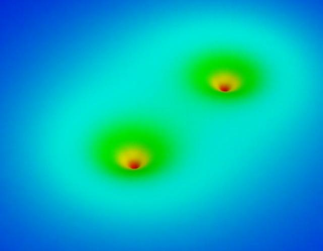
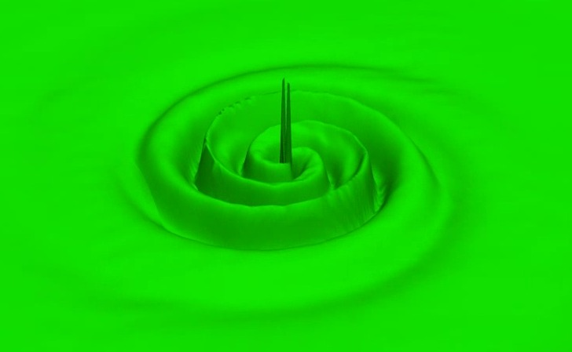
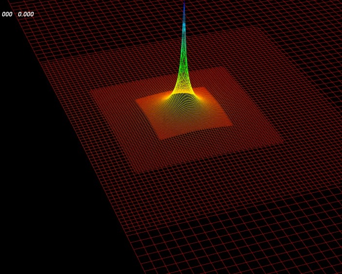

Wolfgang Tichy
Numerical simulation of orbiting black holes
One of the fundamental problems of general relativity is the two body
problem of black holes in orbit. Since in general relativity two orbiting
bodies emit gravitational waves that carry away energy and momentum from the
system, the two black holes spiral inward and eventually merge. The last
few orbits of a black hole binary fall into the strongly dynamic and
non-linear regime of general relativity, and we therefore turn to numerical
simulations to solve the full Einstein equations. Such numerical simulations
have seen many advances in the last few years.

The picture shows the results from the first successful simulation that
lasted for about one orbit. The black holes are shown in black together with
the (color coded) lapse function in the orbital plane.
Using the moving puncture approach, it is now possible to evolve
compact-object binaries through many orbits, merger and the ringdown of the
final black hole. You can click on the pictures below to view short movies
about the merger of two equal mass black holes.
| Lapse function |
Gravitational wave |
BSSN phi on right side of grid |

|

|

|